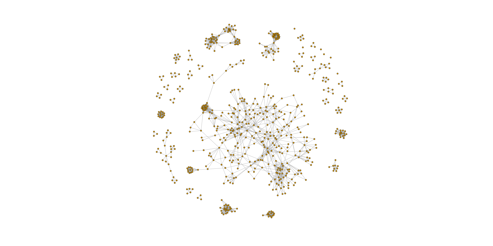

Ergens in december 2015 vroeg ik van de documentatiedienst van data.vti.be een dump van hun CC-BY-NC data, die ik ook snel verkreeg. Mijn eerste idee was om samenwerkingsverbanden tussen acteurs in kaart te brengen, en om met een community detectie algoritme na te gaan of er "kliekjes" van acteurs bestaan in het huidige landschap.

Een statische visualisatie van de graaf van samenwerkingsverbanden tussen acteurs in de laatste 10 seizoenen.
Het blijkt uit de analyse dat er wel degelijk sterke clusters van acteurs bestaan die geregeld met elkaar samenwerken, en beduidend minder samenwerken met anderen. Sommige groepen werken zelfs volledig afgescheiden. Er is een uitgebreid netwerk te bespeuren in de "mainstream".
De data als graaf weergeven
De eerste stap is de ruwe SQL dumps van data.vti.be omvormen tot een samenwerkingsgraaf. De Python code in GitHub leest de SQL bestanden in een tijdelijke SQLite database, en met behulp van enkele queries en een klein algoritme wordt de edgelist opgebouwd. De Python code genereert dus een zogenaamde edgelist, die ik inlees in R met de code in GitHub. In principe had ik dit ook in Python kunnen doen, aangezien de R bibliotheek ook voor Python beschikbaar is. Een eerste, niet dynamische visualisatie van de volledige graaf vind je bovenaan deze pagina, en een dynamische visualizatie staat hieronder. De assumpties onder de opbouw van de edgelist worden hieronder opgesomd.
Dynamische visualizatie van de graaf. Kleuren geven kliekjes aan (Fast Greedy Community) en de grootte van de node is een teken van de centraliteit van de acteur. Zoomen met behulp van scrollen op de graaf. Met de muis over een knoop hangen toont de naam van de acteur. Met klikken en slepen kan je de graaf of een individuele knoop verplaatsen.
Definities, concepten, assumpties
Bij een netwerkanalyse worden er al snel heel wat assumpties gemaakt. Er wordt gegoocheld met concepten en terminologie, waarvan misschien de betekenis niet helemaal duidelijk is. In deze sectie proberen we alle definities, concepten en assumpties netjes op te lijsten.
Omdat ik een beheersbare hoeveelheid data wilde analyseren, heb ik een aantal restricties ingebouwd. Ten eerste heb ik enkel de producties in de laatste 10 seizoenen bekeken, en bovendien per productie enkel die personen behandeld die een acteursrol (functie_id: 11571, 11933, 11971, 11977, 12009, 12018, 12019, 12092, 12156) toebedeeld hadden.
De limitatie voor de laatste tien seizoenen is niet enkel uit pragmatische gronden ingegeven, maar ook om te vermijden dat een zeer logische community structuur naar boven zou komen drijven, namelijk die van de generaties. Door te focussen op de laatste tien seizoenen, dat generatieverschil is niet noodzakelijkerwijse volledig uitgesloten, maar de effecten zouden kleiner kunnen zijn omdat er een specifieke "snapshot" wordt genomen.
Als een samenwerkingsverband heb ik er voor gekozen om een link tussen twee acteurs te leggen als ze samen in 1 productie voorkomen als acteur. Dit sluit dus alle technici, zakelijk leiders, regisseurs, sceneristen, etc. uit. Interessant om op te merken is dat bij een vroegere analyse bleek dat de meest centrale figuur in het theaterlandschap een niet nader genoemde lichttechnicus is. Dit is niet verwonderlijk, sinds die rol kan door 1 en dezelfde persoon lang uitgeoefend worden, en als deze persoon in een vooraanstaand theaterhuis werkt komt hij of zij op die manier in contact met zowat iedereen.
Reruns van producties zijn uitgesloten.
Enkel samenwerkingen tussen acteurs die meer dan 1 keer voorkomen (in verschillende producties, omdat reruns uitgesloten zijn) komen in aanmerking.
Vertices zijn de knooppunten in een graaf. In dit geval zijn de vertices, meervoud voor vertex, acteurs.
Edges zijn de verbindingen tussen vertices. In dit geval is een edge dus een samenwerkingsverband tussen twee acteurs.
Een edgelist is de combinatie van alle edges in een graaf. Een edgelist is ook een formaat om edges in een graaf te representeren in een computerfile. Het formaat heeft een nieuwe lijn over voor elke edge, en een edge wordt gerepresenteerd door twee, door een tab van elkaar gescheiden getallen. De getallen zijn de unieke identifiers van de nodes.
Kliekjes: de aard van een automatisch ontdekt kliekje hangt natuurlijk af van het algoritme dat gebruikt wordt, maar doorgaans kan men zeggen dat een kliekje een groep van acteurs is dat hechter met elkaar samenwerkt dan dat ze samenwerken met andere acteurs.
Eigenvector centraliteit: zoals google pagerank, het gewicht van een acteur wordt bepaald door het aantal connecties dat hij/zij heeft + een connectie met een gewichtige acteur weegt sterker door dan een connectie met een minder gewichtige acteur.